Clash of Clans Hero Pets
Updated: 26 August 2026 · By the Goblins Farm team
All 12 hero pets, with the Pet House level each one unlocks at and the full level table, read from the game files.
Hero Pets
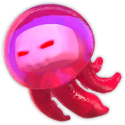
Angry Jelly10 levels, from TH16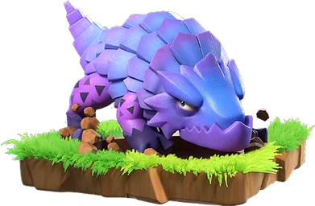
Diggy10 levels, from TH15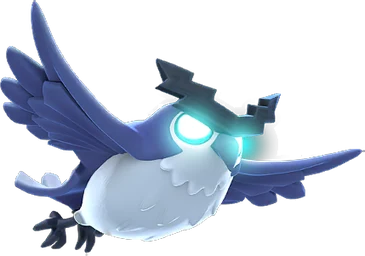
Electro Owl15 levels, from TH14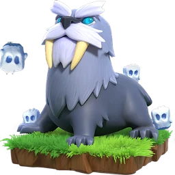
Frosty15 levels, from TH15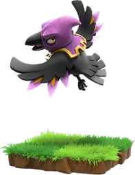
Greedy Raven10 levels, from TH18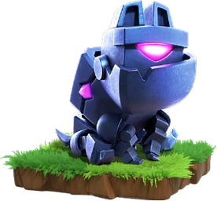
L.A.S.S.I15 levels, from TH14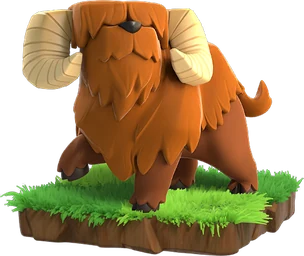
Mighty Yak15 levels, from TH14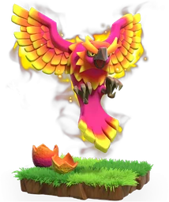
Phoenix10 levels, from TH15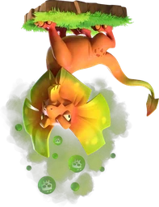
Poison Lizard15 levels, from TH15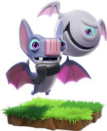
Sneezy10 levels, from TH17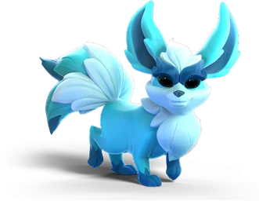
Spirit Fox10 levels, from TH16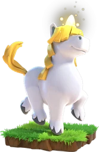
Unicorn15 levels, from TH14Goblins Farm is not affiliated with, endorsed by, sponsored by, or specifically approved by Supercell. Clash of Clans is a trademark of Supercell Oy. This material is unofficial fan content produced under Supercell's Fan Content Policy. Game values change with every update; always verify in-game before committing an upgrade.